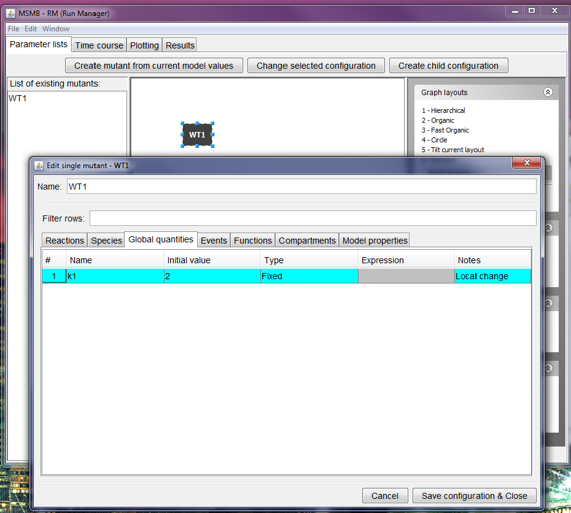
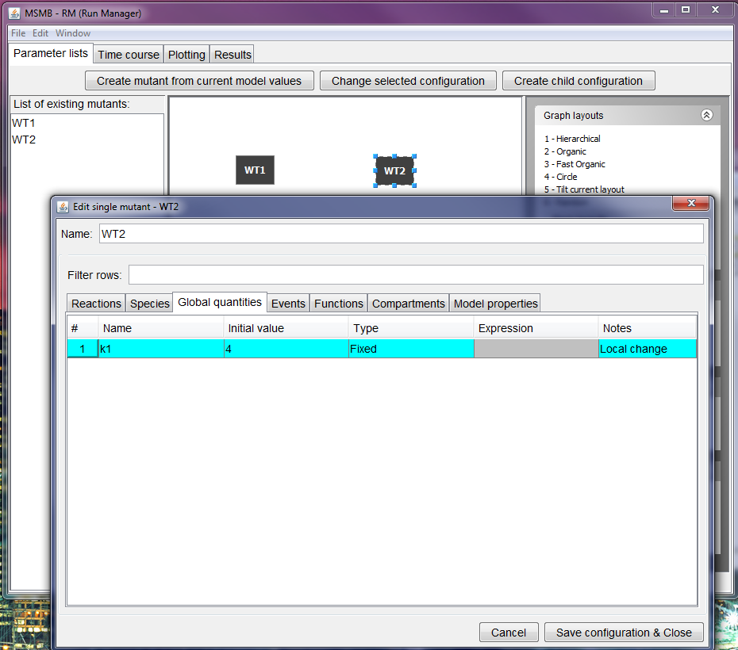
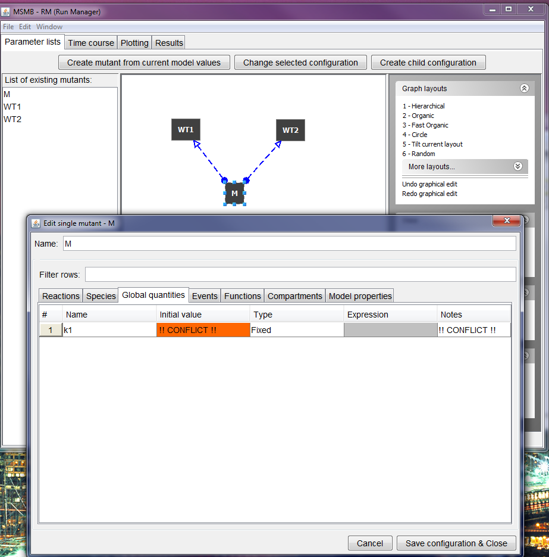
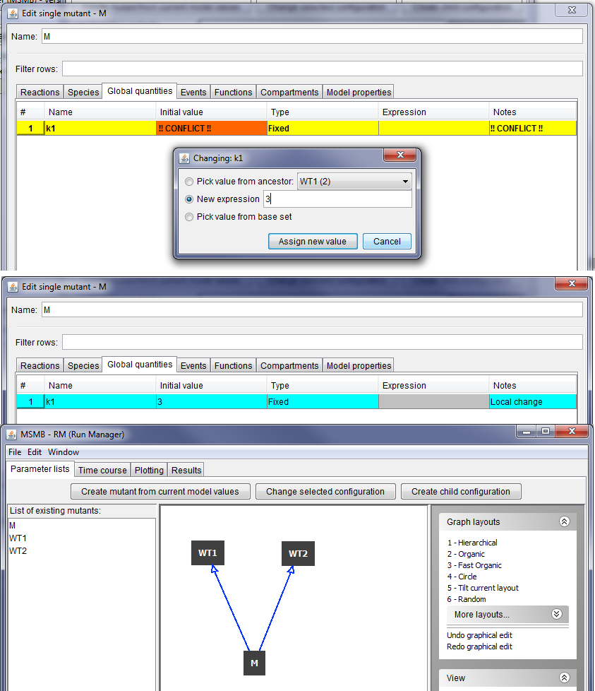
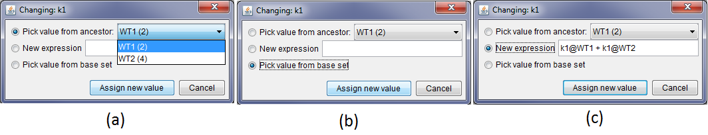

Hierarchical configuration with conflicts
JC-RM guides the user in creating a hierarchy of parameter configurations for a single model defining nodes in terms of minor differences from adjacent nodes.
This makes it easy to define and maintain big sets of minor parameter changes.
For each node, the values of chosen parameters can be changed to new numerical values or to algebraic expressions involving values from ancestor nodes.
Defining a configuration as a child of multiple parent nodes may result in conflicts, if multiple parents redefine a parameter to different values.
JC-RM detects and communicates these conflicts to the modeler who can resolve it either by assigning a new local value to the parameter or by choosing the value from one specific parent.
Graphs with conflicts cannot be used for simulation nor exported to COPASI or SBML, but they can be stored in JC-RM internal format.
In the step-by-step tutorial below, the reader can see how the conflicts are displayed to the modeler. Different ways of resolving the conflict are also presented.
The running example
To present the resolution of conflict in the easiest way possible, a small model with one reaction, three species and one global quantity is used.
To create the model, just open JC-MSMB and input the following information in the 'Reactions' table.
- reaction: A + B -> C, kinetic type: Mass Action, kinetic law: k1
If the autocompletion option is active, all the necessary species, compartment and global quantities will be created automatically.
For further information about how to use JC-MSMB please refer to the
tool documentation.
Open the Run Manager selecting the option in the menu.
In the Parameter lists tab, create a mutant WT1 from current model values (clicking the button at the top and typing the mutant name in the popup window that appears).
Then open the current configuration and assign a value for the global quantity k1 (2 as shown below).

Create a second mutant (WT2) from current model values and assign a different value for the global quantity k1 (4 in this case).

Select the two mutants and click "create child configuration" (the name for the new configuration is M).
Since the two parents redefine locally the same global quantity, JC-RM cannot decide which is the value for k1 that is going to be used in M and it presents the conflict (as shown below).

The conflict is presented in the graph view as a dashed line (instead of the continuous line of the normal inheritance link) with a circle as beginning of the line (to make it easy to identify these problematic nodes also with more intricate graphs).
The specifics of the conflict are shown once the user enter the configuration: the rows with conflicts are marked with a different color and the string "!! CONFLICT !!" is displayed in place of the actual variable value and note (this to allow easy view of all the row with conflicts in big model, through the use of the text filter).
To resolve the conflict the user has several choices: double click on the "Conflict" label will open a popup where the user can assign a new local value to the parameter k1 (3 in the image below).

After clicking "Assign new value" the row in the table will display the new value (instead of the conflict message) and, upon saving the configuration, the graph with the parameter lists will display the connection between M and its parent as a regular line.
Note that there are several ways to resolve a conflict:

As shown in the image above the modeler can:
(a) pick a value from a specific parent using a drop down menu (the current value of the parameter in the parent node is displayed between brackets)
(b) pick the value from the base set (which is the base model value, the one that is shown in the MSMB tables before opening the Run Manager window)
(c) the new local expression can be a complex algebraic expression involving values from the parents with the syntax "
parameter_name@parent_name". In the example above M has a combination (in the form of sum) of the value of k1 in WT1 and of k1 in WT2. Note that the expression can involve other variables, both from the current node as well as from the parents, allowing complex parameter definitions. The complex expression will be very maintainable because changes in the current value of k1 in the parents now will be carried out seamlessly by the tool into all nodes referring to those parameters.